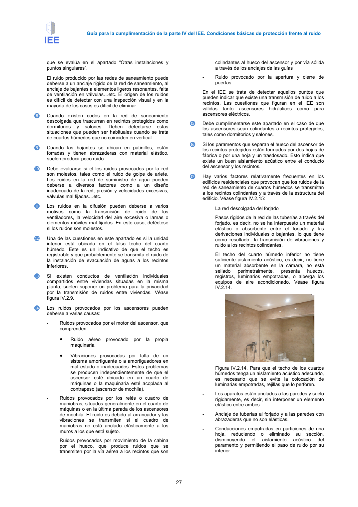

GUIA · Página 27 · versión 2016-11-01
SHA256: 813669d3066c0ff79457d57b80b0512a4fbb248bc5db1f7baf473c369a064738 · página física 27 de 65 · métodos de encabezado
solo si están cotejados.
Formatos: Markdown · JSON de bloques · PDF p. 27 · imagen PNG
Guía para la cumplimentación de la parte IV del IEE. Condiciones básicas de protección frente al ruido 27 que se evalúa en el apartado “Otras instalaciones y puntos singulares”. El ruido producido por las redes de saneamiento puede deberse a un anclaje rígido de la red de saneamiento, al anclaje de bajantes a elementos ligeros resonantes, falta de ventilación en válvulas=etc. El origen de los ruidos es difícil de detectar con una inspección visual y en la mayoría de los casos es difícil de eliminar. ❽ Cuando existen codos en la red de saneamiento descolgada que trascurran en recintos protegidos como dormitorios y salones. Deben detectarse estas situaciones que pueden ser habituales cuando se trata de cuartos húmedos que no coinciden en vertical. ❾ Cuando las bajantes se ubican en patinillos, están forradas y tienen abrazaderas con material elástico, suelen producir poco ruido. ❿ Debe evaluarse si el los ruidos provocados por la red son molestos, tales como el ruido de golpe de ariete. Los ruidos en la red de suministro de agua pueden deberse a diversos factores como a un diseño inadecuado de la red, presión y velocidades excesivas, válvulas mal fijadas=etc. ⓫ Los ruidos en la difusión pueden deberse a varios motivos como la transmisión de ruido de los ventiladores, la velocidad del aire excesiva o lamas o elementos móviles mal fijados. En este caso, detéctese si los ruidos son molestos. ⓬ Una de las cuestiones en este apartado es si la unidad interior está ubicada en el falso techo del cuarto húmedo. Este es un indicativo de que el techo es registrable y que probablemente se transmita el ruido de la instalación de evacuación de aguas a los recintos inferiores. ⓭ Si existen conductos de ventilación individuales compartidos entre viviendas situadas en la misma planta, suelen suponer un problema para la privacidad por la transmisión de ruidos entre viviendas. Véase figura IV.2.9. ⓮ Los ruidos provocados por los ascensores pueden deberse a varias causas: - Ruidos provocados por el motor del ascensor, que comprenden: • Ruido aéreo provocado por la propia maquinaria. • Vibraciones provocadas por falta de un sistema amortiguante o a amortiguadores en mal estado o inadecuados. Estos problemas se producen independientemente de que el ascensor esté ubicado en un cuarto de máquinas o la maquinaria esté acoplada al contrapeso (ascensor de mochila). - Ruidos provocados por los relés o cuadro de maniobras, situados generalmente en el cuarto de máquinas o en la última parada de los ascensores de mochila. El ruido es debido al arrancador y las vibraciones se transmiten si el cuadro de maniobras no está anclado elásticamente a los muros a los que está sujeto. - Ruidos provocados por movimiento de la cabina por el hueco, que produce ruidos que se transmiten por la vía aérea a los recintos que son colindantes al hueco del ascensor y por vía sólida a través de los anclajes de las guías - Ruido provocado por la apertura y cierre de puertas. En el IEE se trata de detectar aquellos puntos que pueden indicar que existe una transmisión de ruido a los recintos. Las cuestiones que figuran en el IEE son válidas tanto ascensores hidráulicos como para ascensores eléctricos. ⓯ Debe cumplimentarse este apartado en el caso de que los ascensores sean colindantes a recintos protegidos, tales como dormitorios y salones. ⓰ Si los paramentos que separan el hueco del ascensor de los recintos protegidos están formados por dos hojas de fábrica o por una hoja y un trasdosado. Esto indica que existe un buen aislamiento acústico entre el conducto del ascensor y los recintos. ⓱ Hay varios factores relativamente frecuentes en los edificios residenciales que provocan que los ruidos de la red de saneamiento de cuartos húmedos se transmitan a los recintos colindantes y a través de la estructura del edificio. Véase figura IV.2.15: - La red descolgada del forjado - Pasos rígidos de la red de las tuberías a través del forjado, es decir, no se ha interpuesto un material elástico o absorbente entre el forjado y las derivaciones individuales o bajantes, lo que tiene como resultado la transmisión de vibraciones y ruido a los recintos colindantes. - El techo del cuarto húmedo inferior no tiene suficiente aislamiento acústico, es decir, no tiene un material absorbente en la cámara, no está sellado perimetralmente, presenta huecos, registros, luminarios empotradas, o alberga los equipos de aire acondicionado. Véase figura IV.2.14. Figura IV.2.14. Para que el techo de los cuartos húmedos tenga un aislamiento acústico adecuado, es necesario que se evite la colocación de luminarias empotradas, rejillas que lo perforen. - Los aparatos están anclados a las paredes y suelo rígidamente, es decir, sin interponer un elemento elástico entre ambos - Anclaje de tuberías al forjado y a las paredes con abrazaderas que no son elásticas. - Conducciones empotradas en particiones de una hoja, reduciendo o eliminado su sección, disminuyendo el aislamiento acústico del paramento y permitiendo el paso de ruido por su interior.
